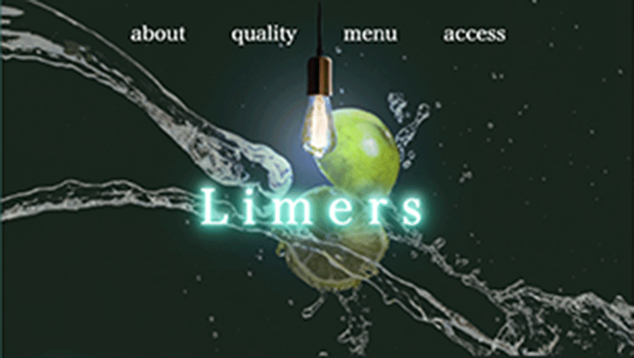
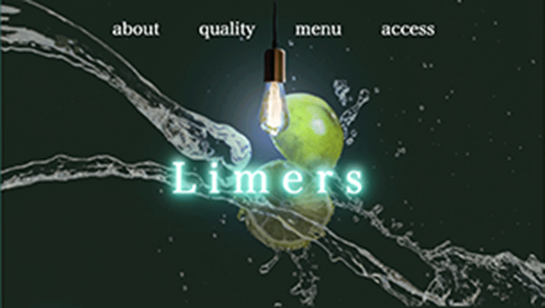

Yuto Tsutadani
portfolio
aim
strength
01
理科大学からアパレルへ、現在はweb業界への挑戦を目指しています。 初めての物事も学ぶ意欲を持って取り組み、知識と技術の習得に注力します。 常に止まらず、自身をアップデートする意識は人一倍です。
02
接客では、「お客様に満足してもらうこと」を軸として 真の目的理解に努めました。 デザイン設計においても、作る意味や得られる結果を考慮するマインドを 忘れず学習しています。
03
アパレル販売の時は、トレンドの把握を欠かさず行い、接客や店舗レイアウトに活かしていました。 エンジニアにおいても、必要なことを把握し、日々自身の市場価値を上げるために尽力します。
skill
Photoshopを使用し、バナーやLPのデザインカンプを作成します。 背景が簡素な画像の切り取りや合成は可能です。
HTML/CSSを使用し、LPや簡素なホームページなどのwebサイトを作成できます。 JavascriptはjQueryやswiperの実装であれば可能です。
LPやECの商品カタログ・動画台本などのライティング経験があります。 ベネフィットを考慮したコピー作成を意識しています。
works
 



profile
つただに
蔦谷
ゆうと
雄斗